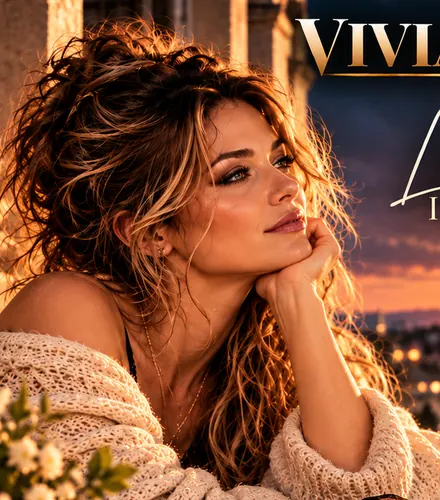
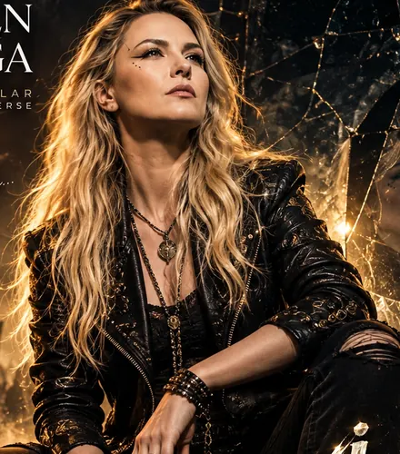
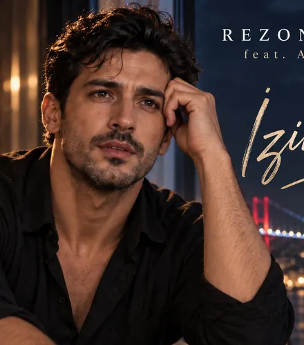

REZONANSLAR MÜZİK EVRENİ
Sanatçılar
On farklı müzikal kimlik, on özgün hikâye. Her sanatçının dünyasını keşfedin.
Müzik Evrenimiz
10 sanatçı
HZN
Hazan
Türkçe Slow / Arabesk
Profili Keşfet →LCR
Lucian Cross
Karanlık Sinematik Rock
Profili Keşfet →
VHL
Vivian Hale
Sinematik Soul-Pop
Profili Keşfet →
SVG
Seren Vega
Türkçe Alternatif Rock
Profili Keşfet →LAY
Layla Rezonans
Arapça / Türkçe Pop
Profili Keşfet →ANX
Aurelia Nox
Fransız Sinematik Pop
Profili Keşfet →CST
Clara Stone
Indie / Dark Pop
Profili Keşfet →DNE
Deniz & Ekin
Akdeniz / Akustik Pop
Profili Keşfet →
ARD
Aras Demir
Modern Türkçe Pop
Profili Keşfet →MKZ
Mahir Köz
Anadolu Folk / Rock
Profili Keşfet →